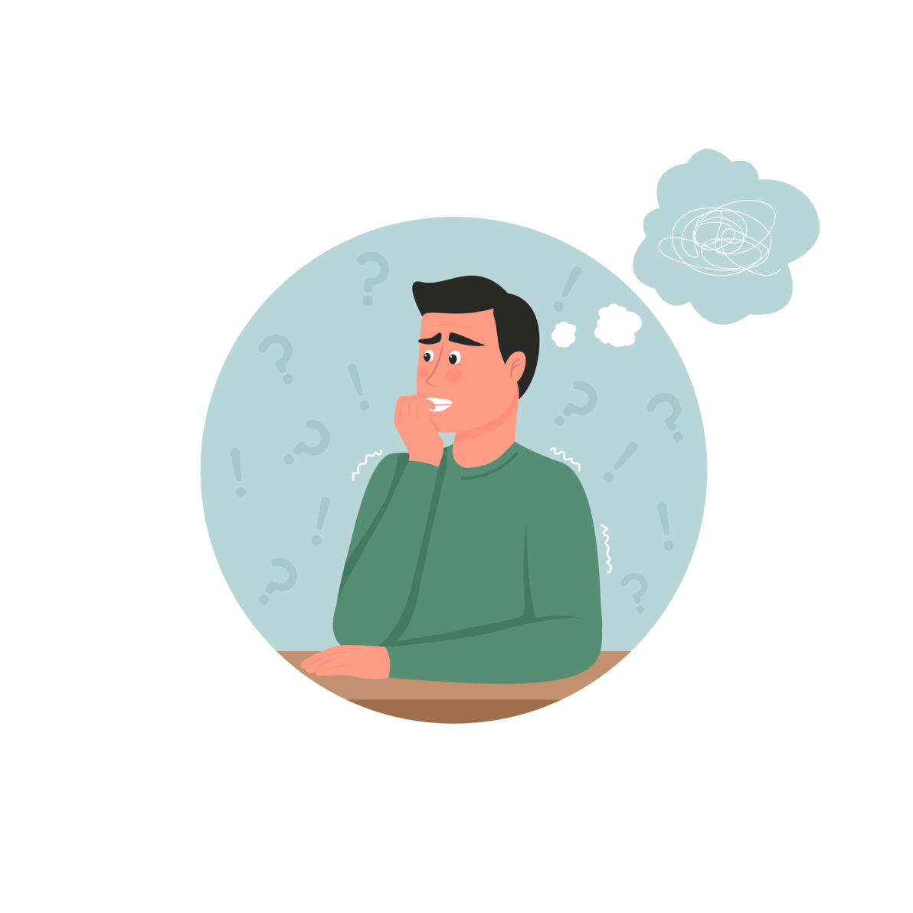
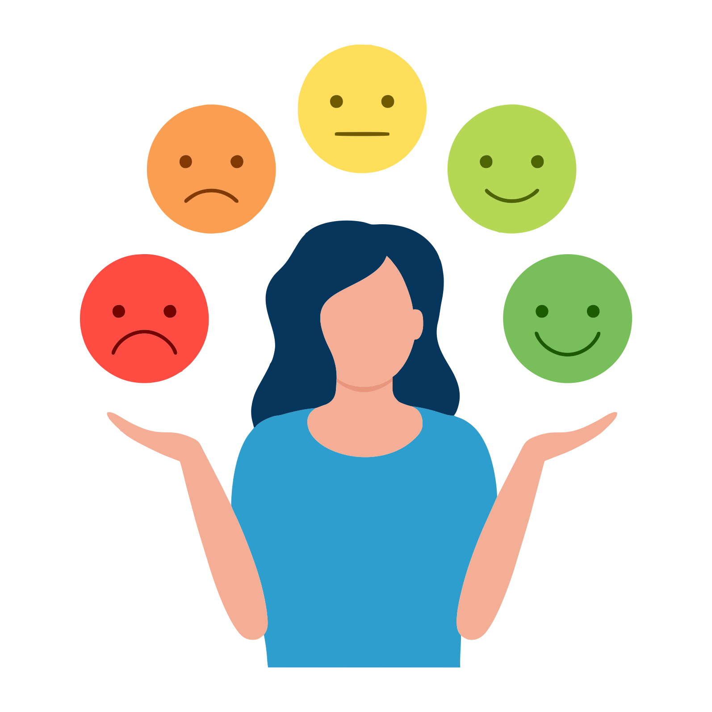
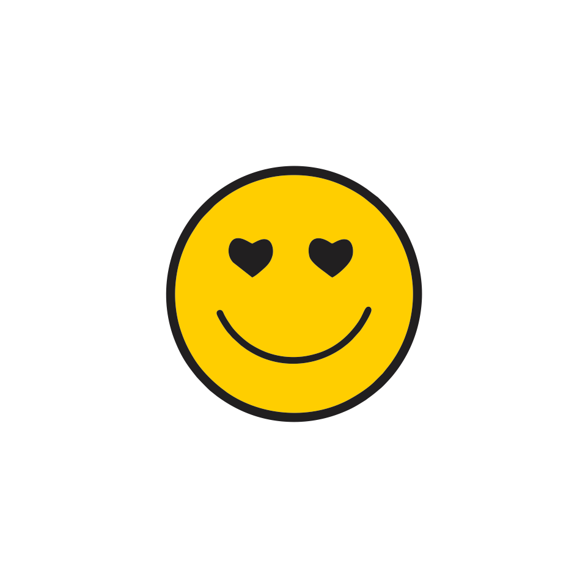
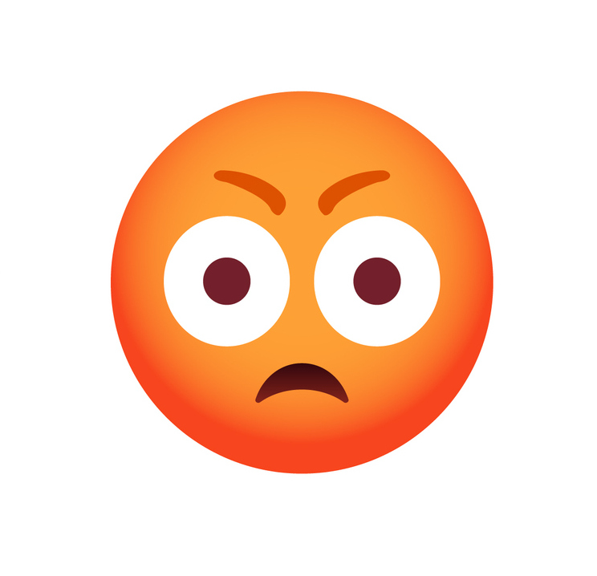
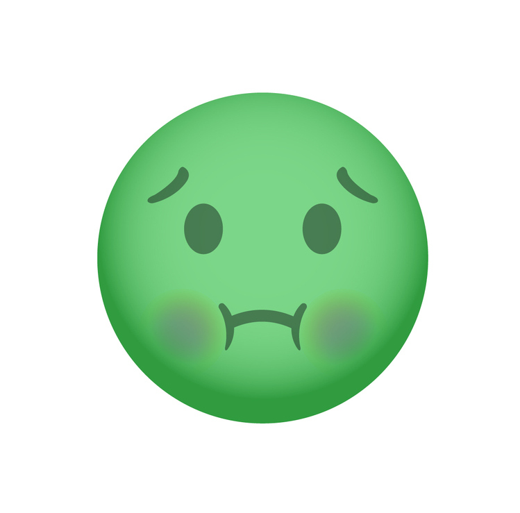

En contexto
|
Ficha técnica
|
|
| Aprendizaje esperado | Identifica la libertad y el respeto como principios éticos fundamentales en las relaciones interpersonales. |
| Contenido central | El manejo de las emociones en las interacciones humanas. |
| Eje transversal | Social. |
En contexto

Imagina que una mañana despiertas y
recuerdas que ese día se llevará a cabo la
final del torneo de debate y tu equipo será
uno de los contendientes. Cuando llegas a la
escuela tus compañeros te reciben con la
noticia de que el capitán del equipo se ha
enfermado y tú serás el encargado de
suplirlo. Más tarde, en el torneo,
desempeñas un gran papel y tu equipo se
lleva la victoria.
¿Cómo reaccionarías ante tales situaciones? Para empezar, la idea de la final del torneo y el hecho de ser parte de uno de los equipos participantes podría despertar en ti una emoción: regocijo. Dicha emoción te pondría en un estado de ánimo particular: entusiasmado. Pero la noticia que recibes provocaría una nueva emoción: ansiedad, que igualmente cambiaría tu estado de ánimo a preocupado. Sin embargo, tu temperamento te permitiría adaptarte a la situación y salir adelante.
¿Cuál sería el resultado en caso de no controlar la emoción de la ansiedad? Probablemente tu equipo no habría sido el ganador. De ahí la importancia de saber dominar tus emociones.
Los diferentes tipos de emociones
Todas las personas estamos expuestas a diversos estímulos externos a los que respondemos de manera subjetiva, es decir, cada persona, al percibir una situación, la procesa y le da un significado al que reacciona tanto fisiológica como actitudinalmente. La respuesta a dichos estímulos son las emociones, así, cuando nos enfrentamos a una experiencia determinada se produce en nosotros una emoción de acuerdo a nuestras propias condiciones culturales, colectivas e individuales.

Por ejemplo, cuando la persona que nos gusta nos invita a salir, reaccionamos con alegría; cuando nos dan una mala noticia, con tristeza; cuando escuchamos un ruido que no identificamos, con temor. ¿Qué tipo de emociones existen? De acuerdo a algunos autores, las emociones se clasifican en: primarias o básicas, y secundarias o complejas. Haz clic en “Siguiente” para conocer su descripción.
Los diferentes tipos de emociones

Primarias.
Son respuestas innatas, no aprendidas, reflejadas en la expresión facial, pero reguladas por la cultura.
¿Cuáles son?
Son respuestas innatas, no aprendidas, reflejadas en la expresión facial, pero reguladas por la cultura.
|  | ||
| Miedo | Tristeza | Ira |
|  | ||
| Alegría | Sorpresa | Asco |
 Secundarias.
Secundarias.Se derivan de las primarias, dependen de condiciones culturales específicas y del desarrollo individual. Son fruto de la socialización y las capacidades cognitivas.
Ansiedad, hostilidad, amor, vergüenza, odio, culpa, simpatía, orgullo, admiración,
envidia, indignación, congratulación, compasión, regocijo, asombro, nostalgia,
serenidad, tedio, confianza, éxtasis, excitación, pena.
Fuente: Vivas, M., Gallego, D. & González, B. (2007). Educar las emociones. [Archivo PDF]. Recuperado de: https://bit.ly/3mpsfZK (Consulta: 7 de junio de 2022).
Emociones positivas o negativas
touch_app
Con base en lo anterior, identifica las emociones que se describen y
clasifícalas como positivas, negativas o neutras. Selecciona la opción
que corresponda.
| Emociones positivas | Implican: - Sentimientos positivos. - Valoración de la situación como buena, benéfica. - No requiere recursos para afrontarla. |
| Emociones negativas | Implican: - Sentimientos negativos. - Valoración de la situación como mala, dañina. - Requieren muchos recursos para afrontarla. |
| Emociones neutras | - No producen reacciones ni agradables ni desagradables. - No se valora como benéfica o dañina. - Facilitan la aparición de una emoción posterior. |
1. Es una emoción que se activa al percibir un peligro ya sea presente o inminente e implica la duda respecto a la capacidad de manejarlo.
a) Miedo, neutra.
b) Envidia, negativa.
d) Culpa, negativa.
Incorrecto. El miedo aparece ante una situación de amenaza, es decir, se valora como dañina.
Intenta de nuevo.
Intenta de nuevo.
Incorrecto. La envidia implica desear el merecido bien de otra persona, lo cual es un sentimiento
negativo.
Intenta de nuevo.
Intenta de nuevo.
Correcto. Al aparecer ante una situación de amenaza que se valora como dañina, el miedo es una
emoción negativa, además de requerir de un gran esfuerzo para afrontarlo.
Incorrecto. La culpa es un sentimiento negativo, pero no se relaciona con la advertencia de un
peligro, sino con ser el causante de algo nocivo.
Intenta de nuevo.
Intenta de nuevo.
Emociones positivas o negativas
2. Es una emoción que se presenta ante algo repentino, imprevisto o extraño.
a) Miedo, negativa
c) Ansiedad, negativa.
d) Alegría, positiva.
Incorrecto. El miedo aparece ante una situación imprevista pero que implica una amenaza, por lo
que se valora como dañina.
Intenta de nuevo.
Intenta de nuevo.
Correcto. La sorpresa es una emoción que aparece ante algo imprevisto, pero rápidamente se
convierte en una emoción posterior, por lo que no se valora ni como benéfica ni como dañina.
Incorrecto. La ansiedad es un estado de agitación que puede aparecer a raíz de diversas situaciones
y se valora como dañina.
Intenta de nuevo.
Intenta de nuevo.
d) Incorrecto. La alegría es una emoción que aparece a raíz de la posesión de un bien o de la vivencia
de un suceso favorable, por lo que se valora como benéfica.
Intenta de nuevo.
Intenta de nuevo.
Emociones positivas o negativas
3. Emoción que se produce cuando se alcanza la posesión de algún bien o ante la vivencia de un suceso favorable.
a) Miedo, negativa
b) Sorpresa, neutra.
c) Ansiedad, negativa.
Incorrecto. El miedo aparece ante una situación imprevista que implica una amenaza y se valora
como dañina.
Intenta de nuevo.
Intenta de nuevo.
Incorrecto. La sorpresa es una emoción que aparece ante algo imprevisto y rápidamente se
convierte en una emoción posterior, por lo que no se valora ni como benéfica ni como dañina.
Intenta de nuevo.
Intenta de nuevo.
Incorrecto. La ansiedad es un estado de agitación que puede aparecer a raíz de diversas situaciones
y se valora como dañina.
Intenta de nuevo.
Intenta de nuevo.
Correcto. La alegría es una emoción que aparece a raíz de la posesión de un bien o de la vivencia de
un suceso favorable, por lo que se valora como benéfica.
Emociones positivas o negativas
4. Emoción que se desencadena ante situaciones valoradas como injustas o que atentan contra la integridad, las ideas y la libertad personal.
b) Hostilidad, negativa.
c) Amor, positiva.
d) Alegría, positiva.
Correcto. La ira es una emoción que se desencadena ante situaciones valoradas como injustas, por
lo que se valoran como dañinas.
Incorrecto. La hostilidad es una emoción originada por un resentimiento que ha prevalecido en el
tiempo y es valorada como dañina. Intenta de nuevo
Intenta de nuevo.
Intenta de nuevo.
Incorrecto. El amor es una emoción causada por la inclinación afectiva hacia una persona, animal,
cosa o idea, por lo que es valorada como benéfica.
Intenta de nuevo.
Intenta de nuevo.
Incorrecto. La alegría es una emoción que aparece a raíz de la posesión de un bien o de la vivencia
de un suceso favorable, por lo que se valora como benéfica.
Intenta de nuevo.
Intenta de nuevo.
Emociones positivas o negativas
5. Emoción que se desencadena ante situaciones que causan una impresión desagradable o repugnancia.
a) Sorpresa, neutra.
b) Hostilidad, negativa.
d) Alegría, positiva.
Incorrecto. La sorpresa es una emoción que aparece ante algo imprevisto y rápidamente se
convierte en una emoción posterior, por lo que no se valora ni como benéfica ni como dañina.
Intenta de nuevo.
Intenta de nuevo.
Incorrecto. La hostilidad es una emoción originada por un resentimiento que ha prevalecido en el
tiempo y es valorada como dañina.
Intenta de nuevo.
Intenta de nuevo.
c) Correcto. El asco es una respuesta emocional hacia estímulos desagradables, situación que es
valorada como dañina.
Incorrecto. La alegría es una emoción que aparece a raíz de la posesión de un bien o de la vivencia
de un suceso favorable, por lo que se valora como benéfica.
Intenta de nuevo.
Intenta de nuevo.
Familias de emociones
low_priority
Daniel Goleman, autor del libro “La inteligencia emocional”, propone
clasificar a las emociones en familias a partir de las consideradas
primarias. En la columna izquierda se presentan las emociones
primarias y en la derecha las emociones correspondientes a sus
respectivas familias, sólo que estas últimas se encuentran en
desorden. Selecciona una de ellas y desplázala hacia arriba o hacia
abajo para hacerla coincidir y ordenar la tabla.
-
Ira
- Tristeza
- Miedo
- Alegría
- Sorpresa
- Asco
-
Rabia, enojo, resentimiento,
furia, exasperación, indignación,
animosidad, irritabilidad,
hostilidad, odio.
swipe_vertical
-
Aflicción, pena, desconsuelo,
pesimismo, melancolía, soledad,
desaliento, desesperación.
swipe_vertical
-
Ansiedad, aprensión, temor,
preocupación, inquietud,
desasosiego, incertidumbre,
angustia, terror.
swipe_vertical
-
Felicidad, gozo, tranquilidad,
contento, deleite, diversión,
satisfacción, euforia, éxtasis.
swipe_vertical
-
Asombro, desconcierto, admiración.
swipe_vertical
-
Desprecio, desdén, displicencia,
aversión, antipatía, disgusto,
repugnancia.
swipe_vertical
Fuente: Goleman, D. (2010). La inteligencia emocional. España: Kairós.
Identifico emociones
pan_tool
Observa la expresión facial y la postura corporal de las personas en las siguientes imágenes, identifica la emoción que manifiestan y arrastra las palabras de la lista a donde correspondan.
Miedo
Ira
Vergüenza
Culpa
Admiración
Indignación
Sorpresa
Ansiedad
Compasión
Tedio
Incorrecto. Analiza la expresión facial y la postura corporal de las personas en las fotografías e intenta de nuevo.
¡Es correcto! La expresión facial y la postura corporal de las
personas corresponden a la emoción seleccionada.
Manejo de emociones
0
input
Lee el siguiente caso, reflexiona sobre el mismo y escribe un texto en el que indiques qué emociones están involucradas y qué valores necesitarías para afrontarlas.
Al terminar haz clic en Guardar para obtener una retroalimentación y en Enviar para finalizar la actividad.
- Mínimo 50 palabras. Máximo 100 palabras.
Al terminar haz clic en Guardar para obtener una retroalimentación y en Enviar para finalizar la actividad.
- Mínimo 50 palabras. Máximo 100 palabras.
Ricardo tiene un compañero en clase de Ética llamado Luis. Éste suele
obtener muy buenas calificaciones y el maestro siempre resalta sus
cualidades, además de ponerlo como ejemplo para el resto de la clase.
Para trabajar un tema se pidió al grupo formar equipos, pero nadie quiso
incluir a Luis, por lo que el maestro lo integró al equipo de Ricardo, quien,
junto a los demás miembros, reclamó la medida, calificándola de injusta y
arbitraria.
Máximo número de palabas alcanzado.
En este caso pueden estar involucradas las emociones de las familias de la sorpresa, la ira y el asco. La ira y el asco son consideradas negativas y para afrontarlas se requieren valores como la empatía, amabilidad, tolerancia, el respeto y la solidaridad.
Finalizar
De un total de 0 actividades tienes 0 sin realizar.
Emociones positivas o negativas
-> Ejercicio 1
-> Ejercicio 1
Emociones positivas o negativas
-> Ejercicio 2
-> Ejercicio 2
Emociones positivas o negativas
-> Ejercicio 3
-> Ejercicio 3
Emociones positivas o negativas
-> Ejercicio 4
-> Ejercicio 4
Emociones positivas o negativas
-> Ejercicio 5
-> Ejercicio 5
Familias de emociones
-> Ejercicio 1
-> Ejercicio 1
Identifico emociones
-> Ejercicio 1
-> Ejercicio 1
Manejo de emociones
-> Ejercicio 1
-> Ejercicio 1
Actividad finalizada
Calificación final: 0
Emociones positivas o negativas
-> Ejercicio 1
-> Ejercicio 1
0
Emociones positivas o negativas
-> Ejercicio 2
-> Ejercicio 2
0
Emociones positivas o negativas
-> Ejercicio 3
-> Ejercicio 3
0
Emociones positivas o negativas
-> Ejercicio 4
-> Ejercicio 4
0
Emociones positivas o negativas
-> Ejercicio 5
-> Ejercicio 5
0
Familias de emociones
-> Ejercicio 1
-> Ejercicio 1
0
Identifico emociones
-> Ejercicio 1
-> Ejercicio 1
0
Manejo de emociones
-> Ejercicio 1
-> Ejercicio 1
0
Ética
Manejo de emociones y sentimientos
-
info En contexto
-
info Los diferentes tipos de emociones
-
games Actividad 1. Emociones positivas o negativas
-
games Actividad 2. Familias de emociones
-
games Actividad 3. Identifico emociones
-
games Actividad 4. Manejo de emociones
-
flag Finalizar
donut_large Progreso 0 / 8